地政学
ルアンダはアンゴラ国家の政治、石油外交、港湾、軍事記憶が集まる首都です。大西洋岸からブラジル、ポルトガル、中国、南部アフリカへ接続し、資源国家の交渉と国内統合が街の開発に現れる海の前線でもあります。
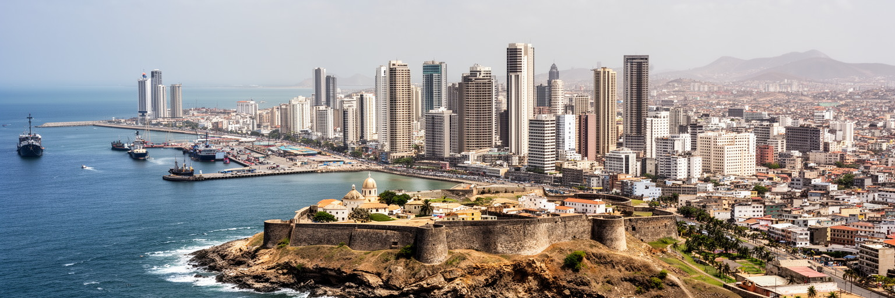
🇦🇴 アンゴラ / 南部アフリカ / World City Atlas
大西洋岸の石油首都です。港、行政、金融、内戦後の人口集中、ムセケ、音楽、宗教、海岸の観光が近い距離で重なり、アンゴラの国家と生活の矛盾を映します。
都市の骨格
ルアンダは海岸のオフィス街、港、植民地期の要塞、内陸へ広がるムセケ、郊外の新住宅地が同時に見える首都です。石油収入の集中と水、住宅、交通の不足が、同じ都市の日常を作ります。
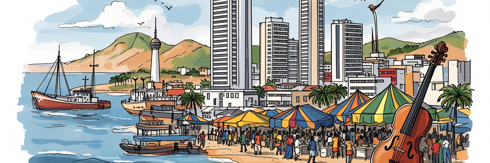
ルアンダはアンゴラ国家の政治、石油外交、港湾、軍事記憶が集まる首都です。大西洋岸からブラジル、ポルトガル、中国、南部アフリカへ接続し、資源国家の交渉と国内統合が街の開発に現れる海の前線でもあります。
政府機関、港湾、建設、銀行、小売、交通、警備、家事労働が都市を支えます。高収入の専門職と日雇い、露店、乗合タクシーの仕事が並び、通貨安と物価上昇が市場の買い物、食費、交通費、家計を日々圧迫します。
ポルトガル語、キンブンドゥ、カトリック、福音派教会、祖先への敬意、センバ、キゾンバ、クドゥーロが都市の声を作ります。教会、音楽、ラジオ、SNS、家族行事、学校、祝祭、市場、サッカーが出身地を結び直します。
旅行者は湾岸、要塞、イルハ、ムスロ島、奴隷博物館を巡りますが、住民には水、電力、通勤、家賃、排水、治安、教育が身近です。夜の光と音楽の裏で、こどもや高齢者、市場を含むムセケの生活も同時に動きます。
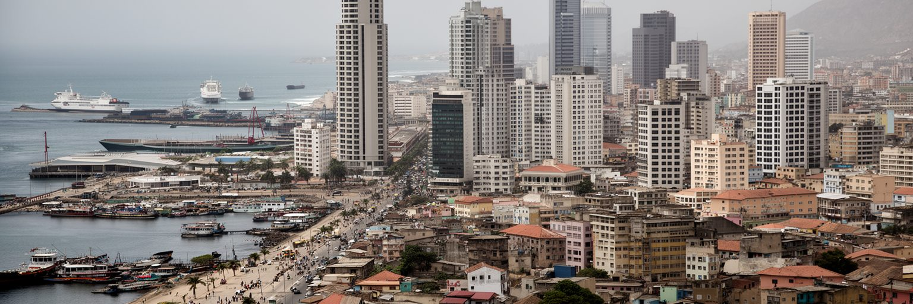
ルアンダの地理は、大西洋に開く湾と内陸へ伸びる幹線道路によって理解できます。海岸の低いカーブには港、行政施設、銀行、ホテル、高層住宅が並び、背後には内戦後の人口流入で広がったムセケと郊外住宅地が広がります。港は輸入品、燃料、建材、食料、消費財を受け入れ、石油国家の首都を日々動かします。アンゴラの油田の多くは沖合にあり、都市の富は海の向こうの採掘現場、外資企業、政府契約、港湾物流と結びつきます。湾岸の美しい景観だけを見ると、都市の重心が海側に偏っている理由を見落とします。国家予算、外交、建設投資、輸入依存、食料価格、通勤時間は、すべてこの海への接続と関係しています。ルアンダは南部アフリカの内陸国へ向かう玄関ではありませんが、アンゴラが世界市場と交渉する最も強い窓口です。海から見える首都の輪郭は洗練されていますが、その裏側では道路、水道、排水、住宅が追いつかず、日常の負担が大きくなります。港湾都市であることは、世界に近いことと、輸入価格や為替に生活が揺さぶられることを同時に意味します。海岸と内陸の移動が滞ると、仕事、学校、病院、港の荷物まで遅れます。都市の距離は地図上の短さではなく、渋滞、砂ぼこり、カンドンゲイロを待つ列、水を運ぶ時間で測られます。夕方の湾岸には車のライトが伸び、内陸側では発電機の音と屋台の煙が立ち上がります。湾を囲む首都の美しさは、その背後の生活インフラを読む入口でもあります。
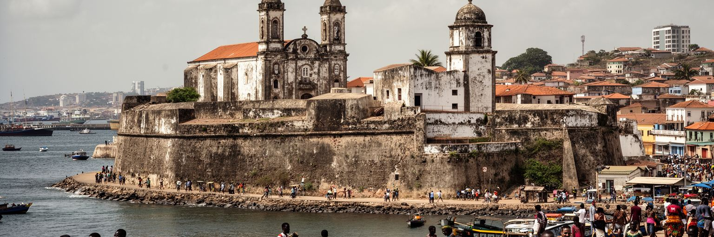
ルアンダは1576年にポルトガル植民地の拠点として築かれ、要塞、教会、港、行政施設を通じて大西洋世界に組み込まれました。アンゴラ沿岸はブラジルへ向かう奴隷交易と深く結びつき、ルアンダの港は人の移送、暴力、商業、信仰、言語の記憶を抱えています。サン・ミゲル要塞や国立奴隷博物館を歩くことは、植民地建築を眺めるだけではなく、都市がどのような世界秩序の中で作られたかを考えることです。ポルトガル語が公用語として残り、カトリック、行政制度、街路名、料理、音楽、家族名に植民地期の層が見えます。一方で、キンブンドゥを含む地域言語、内陸の王国や共同体、アフリカの宗教的実践は、都市の深い土台を作ってきました。独立後のルアンダは植民地の象徴をただ消したのではなく、国家の記憶として再配置してきました。奴隷交易の歴史を観光の説明に閉じ込めると、暴力の経済と現代の格差が切り離されます。海に向かう美しい石造りの景観は、同時に多くの人が故郷から引き離された場所でもあります。ルアンダを読むには、港の華やかさと喪失の歴史を同じ視界に置く必要があります。独立記念の語り、ポルトガルとの関係、ブラジルとの文化的な往来は、過去の支配を単純に終わったものにしません。古い建物を保存する時も、誰の記憶を語り、誰の沈黙を残すのかが問われます。歴史の層は観光資源である前に、都市の倫理を形作ります。
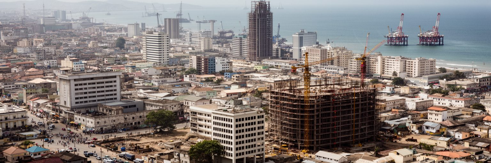
ルアンダの経済を支える最大の背景は石油です。沖合油田、国営企業、外資系石油会社、政府機関、銀行、建設会社、輸入業者が首都に集中し、ホテル、飲食、警備、運転手、清掃、専門サービスの仕事を生みます。石油収入は道路、高層ビル、郊外住宅、ショッピング施設を増やしましたが、収入の分配は均等ではありません。原油価格が下がれば国家財政と為替が揺れ、輸入食品や燃料、建材の価格が上がり、低所得世帯ほど影響を受けます。ルアンダの高価な不動産や高級店は資源国家の富を示しますが、ムセケの水売り、露店、非公式交通はその富が生活基盤に十分届いていないことも示します。石油経済は雇用を作る一方で、技能の偏り、汚職への不信、公共投資の優先順位、地方との格差を生みます。都市の問題は、資源があるかないかではなく、資源収入が学校、病院、水道、公共交通、住宅、雇用訓練へどれだけ戻るかにあります。ルアンダを石油都市として見る時、海上の採掘施設だけでなく、街で働く人の家計と移動を見なければなりません。資源の富は、日常の安定へ変わって初めて都市の力になります。若い世代にとっては、石油会社に直接入る道だけでなく、会計、語学、整備、情報技術、物流、公共サービスへ技能を広げられるかが重要です。産業の多角化が進まなければ、都市は原油価格の波を生活費として受け止め続けます。石油後の都市像を考えることも、現在のルアンダを読む作業です。
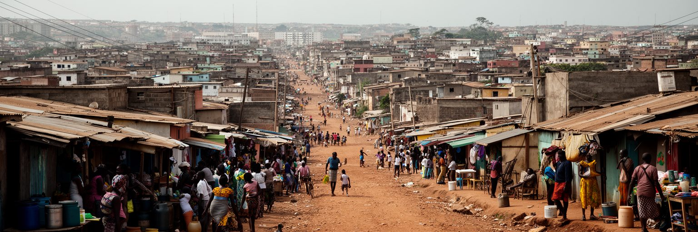
ルアンダの人口増加は、内戦、地方の貧困、仕事への期待、安全を求める移動によって加速しました。都市の周縁にはムセケと呼ばれる低所得住宅地が広がり、未舗装道路、簡易住宅、露店、給水車、共同井戸、発電機、乗合タクシーが生活を支えています。ムセケは単なる貧困の景観ではありません。家族が土地を確保し、商売を始め、地方出身者同士が助け合い、教会や市場を作る都市化の現場です。朝は子どもが制服で学校へ向かい、高齢者は店先の日陰で近所のニュースを聞き、若者は携帯電話で仕事や音楽の情報を追います。しかし法的な土地権利が弱く、排水、衛生、学校、医療、道路、電力が不足すると、住民は高い生活費と不安定な住まいを背負います。再開発や撤去は都市の見た目を整える一方、仕事場や親族の近さを失わせることがあります。中心部の高層住宅と郊外のムセケを別々に見ると、ルアンダの実際の生活圏を理解できません。多くの家事労働者、警備員、運転手、建設労働者、小売の店員は、遠い住宅地から時間をかけて通勤します。都市の成長を測るには、ビルの高さだけでなく、水を買う時間、通学路の安全、雨の日の冠水、家賃の重さを見る必要があります。ムセケは都市の周辺ではなく、ルアンダを動かす労働力と生活の中心です。地方の家族へ送金する人も多く、都市の賃金は遠い村の食費や学費にもつながります。住民を追い出さずにインフラを入れる技術が、都市の公平さを決めます。
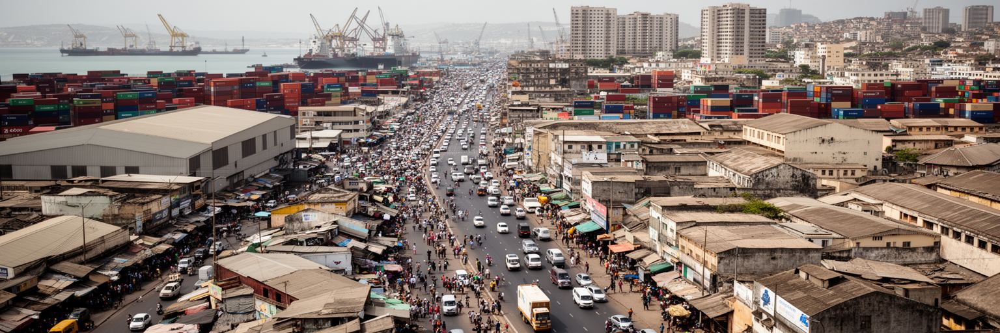
ルアンダ港は、アンゴラの消費と建設を支える大きな入口です。食料、燃料、機械、車、医薬品、衣料、建材、日用品が港から入り、倉庫、卸売市場、トラック、露店、スーパーへ流れます。国内の農業や製造業が十分に都市需要を満たせない時、港の混雑、通関、為替、輸送費はそのまま物価に跳ね返ります。市場や買い物の現場では、輸入米、魚、鶏肉、携帯部品、古着の値段が毎日の会話になり、ラジオとSNSが為替や燃料不足の噂を広げます。道路交通も物流の一部です。中心部と郊外を結ぶ幹線では、通勤車、ミニバス、トラック、建設車両が集中し、時間の損失と燃料消費が増えます。新しい道路やバイパス、空港、郊外開発は都市を広げますが、公共交通が弱いままでは移動の負担が家庭へ移ります。港湾労働、倉庫作業、配送、露店販売、荷役、警備は目立ちにくい職ですが、都市の食卓と建設現場をつなぐ基礎です。ルアンダを物流から読むと、石油輸出で外貨を得る国が、日常生活では多くを輸入に頼る矛盾が見えます。港は国際経済の窓であると同時に、家計の価格表を決める場所です。効率的な港と道路は企業だけの利益ではなく、低所得世帯が食料と通勤に使う時間を減らす公共財でもあります。空港や新港計画が進む時も、中心部の渋滞と市場への配送が解けなければ、生活の実感は変わりません。物流は巨大なコンテナだけでなく、朝にパンを運ぶ小さな車、魚を売る女性、建設現場へ向かう資材にも現れます。
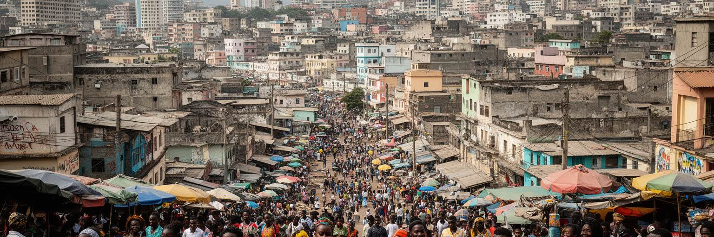
ルアンダの文化は、ポルトガル語の都市でありながら、キンブンドゥをはじめとする地域言語、移民の記憶、内戦後の若者文化を強く含みます。センバ、キゾンバ、クドゥーロは、踊りの楽しさだけでなく、恋愛、貧困、政治風刺、街区の誇り、移民の孤独を運ぶ音です。ラジオ、クラブ、路上のスピーカー、結婚式、教会行事、動画配信は、都市の声を広げる媒体になります。夜になると湾岸の店先やムセケの広場から低音が漏れ、焼き肉の匂い、車のライト、スマートフォンの画面の光が混ざります。音楽は国民的な一体感を作る一方、ムセケの若者が自分の経験を語る手段にもなります。ファッション、髪型、ダンス、屋台、サッカー、携帯電話の動画が混ざり、ルアンダの文化は公式の博物館だけでなく、街角と家庭で更新されます。文化産業が伸びれば、演奏者、ダンサー、映像作家、音響、衣装、飲食、警備にも職が生まれますが、収入は不安定で、著作権や会場費の負担も残ります。ルアンダを文化から読むことは、資源都市の硬い印象をほどき、住民が格差や不安をどう笑い、踊り、語り直しているかを見ることです。音楽は観光の背景音ではなく、都市が自分を説明する言葉です。踊りのリズムには、労働、家族、若さ、抵抗、誇りが重なっています。市場の会話、ラジオの流行語、結婚式の衣装、サッカー観戦の熱気も都市文化の一部です。若者がスマートフォンで曲を広げることで、小さなスタジオから海外のディアスポラへ声が届きます。
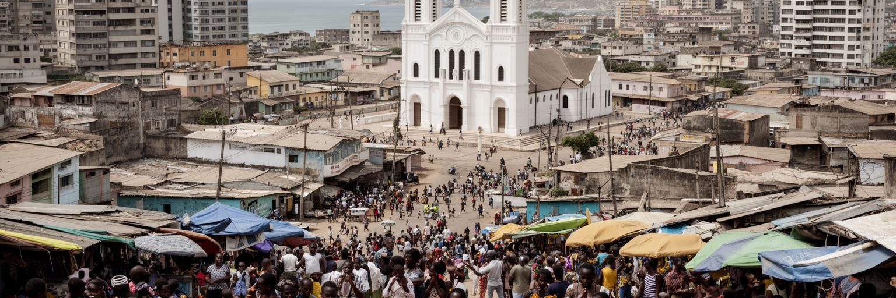
ルアンダの宗教生活は、カトリック、福音派教会、独立教会、祖先への敬意、地域の慣習が重なって成り立ちます。植民地期から続く教会は教育、慈善、儀礼の場であり、内戦後に人口が集まった地区では新しい教会が住民の相談、音楽、相互扶助、就職情報、家族問題を支える場所になりました。日曜礼拝、聖歌、結婚式、葬儀、洗礼、祈祷会は、都市の時間を区切ります。地方から来た人にとって、教会や親族ネットワークは、住まい探し、仕事、子どもの世話、危機の時の借金を助ける重要な回路です。同時に、宗教は政治、メディア、寄付、道徳、商業とも関わり、影響力を持つ指導者が都市の世論に触れることもあります。ルアンダの信仰を読むには、大聖堂や礼拝堂の建物だけでなく、住宅地の小さな集会、夜の祈り、葬儀の費用、音楽の練習、家族の義務を見る必要があります。貧困や不安定な雇用の中で、宗教共同体は精神的な支えであると同時に、実用的な安全網にもなります。祈りは都市の外にあるものではなく、水不足、病気、失業、通学、移住の不安と同じ生活の中にあります。教会の音は、ルアンダの社会的な結び目を示しています。葬儀や祝いの費用を親族で集める習慣は、都市の経済的な相互扶助にもなります。信仰の場は、行政サービスが届きにくい地区で情報と安心を配る窓口にもなります。宗教を通じて都市の不安と希望が共有されます。
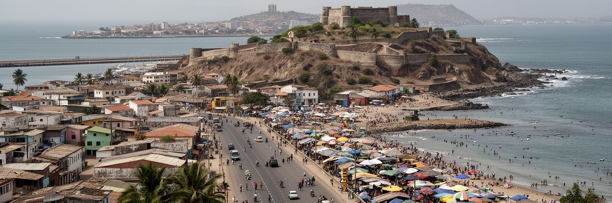
ルアンダの観光は、湾岸の景観、サン・ミゲル要塞、古い教会、国立奴隷博物館、イルハ・ド・カーボの海岸、ムスロ島、ベンフィカ市場、音楽と食を組み合わせて進みます。旅行者には大西洋の明るさと高層都市が印象に残りますが、都市の魅力は海辺だけでは完結しません。植民地と奴隷交易の記憶、内戦後の再建、ムセケの生活、石油経済、現代音楽を同時に見ることで、ルアンダの厚みが見えてきます。観光産業はホテル、飲食、ガイド、運転手、清掃、警備、土産物販売に仕事を生みますが、治安、交通、物価、インフラ不足、情報の少なさが訪問の壁になります。海岸のレストランやリゾートは都市の余暇を支える一方、住民にとっては入れる場所と入れない場所の差も作ります。ムスロ島やビーチの開発では、漁民、環境、交通、廃棄物、地価が問題になります。ルアンダの観光を育てるには、豪華な海岸だけでなく、歴史を丁寧に説明する施設、歩きやすい公共空間、地域に収入が戻る仕組みが必要です。旅の価値は、湾岸の写真を撮るだけでなく、アンゴラの都市が抱える記憶と現在を理解することにあります。海の美しさは、都市の不平等を隠す幕ではなく、問いを開く入口です。市場で交わされるポルトガル語と地域語、海岸で働く若者、博物館の静けさをつなげて見ると、短い滞在でも都市の重層性が伝わります。観光客の安全と住民の生活が両立する公共空間を増やすことが、ルアンダの印象を長く支えます。
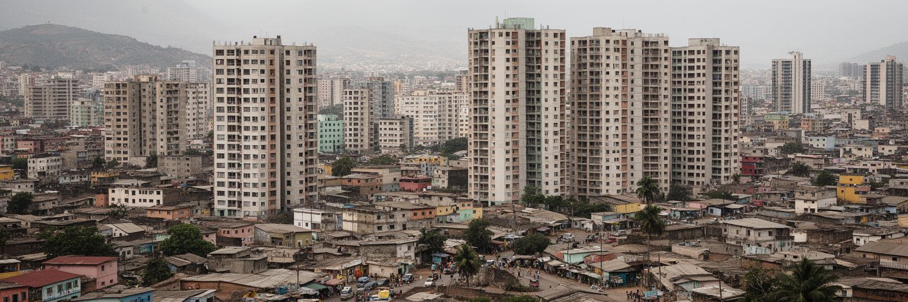
ルアンダの日常で最も切実なものの一つは、水と住宅です。急速な人口増加に対して水道、下水、排水、電力、道路、学校、病院の整備が追いつかず、多くの世帯は水を買い、貯め、運ぶ時間を生活の中に組み込んでいます。水売りの車の音、ポリタンクを動かす音、発電機の低い響きは、朝の住宅地を特徴づけます。雨季には排水の弱い地区で道路が悪化し、衛生と移動が難しくなります。高層マンションや郊外ニュータウンは近代的な都市像を示しますが、職場から遠い場所に住むと交通費と時間が重くなります。中心部に近い土地は高価で、低所得世帯は不安定な土地権利の地区に住み続けることが多いです。住宅政策が建物の数だけを増やしても、学校、診療所、市場、公共交通、仕事との距離が合わなければ暮らしは安定しません。水道の接続、排水路、廃棄物収集、日陰のある道路、街灯は、都市の尊厳を支える基本です。ルアンダの格差は所得だけでなく、毎朝水を得るために使う時間、子どもが安全に通学できる距離、雨の日に家へ戻れるかにも表れます。住み続ける条件を整えることは、都市の見た目を整えることより深い作業です。水と住宅は、石油首都の豊かさが生活に届いているかを測る物差しになります。家の中に水が来るか、夜に街灯があるか、救急車が通れる道があるかは、都市の市民権を示します。女性や子どもが水運びに使う時間は、学習や休息、働く機会を奪います。
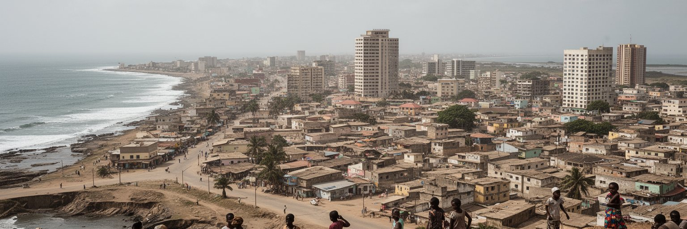
ルアンダは大西洋岸にありながら、気候は比較的乾いています。短い雨季と長い乾季、海風、湿気、砂ぼこり、暑さが生活のリズムを作ります。雨が少ない都市では水源と配水の管理が重要になり、人口増加が進むほど一人ひとりが使える水と衛生の格差が目立ちます。一方で、雨季の強い雨は排水の弱い地区を冠水させ、未舗装道路や低地の住宅に負担をかけます。海岸部では浸食、高潮、排水の流出、廃棄物、埋め立て開発が都市環境に影響します。海辺の道路や高級住宅は魅力的ですが、気候変動で海面や波のリスクが増えれば、都市の資産も生活も守り方を変える必要があります。暑さは屋外で働く建設労働者、露店商、警備員、交通関係者、子どもや高齢者に強く響きます。公園、街路樹、日陰、涼める公共施設は、見た目の飾りではなく健康を守る設備です。ルアンダの環境問題は、自然保護だけではなく、誰が暑さと水不足を背負うかという社会問題でもあります。石油経済に依存する都市が、気候リスクと脱炭素の時代にどのような公共投資を選ぶかは、将来の競争力にも関わります。海は富を運ぶだけでなく、備えを求める存在でもあります。乾いた季節には粉じんと排気が呼吸を重くし、雨の季節には短時間の冠水が学校や市場を止めます。都市の気候対策は大規模な防潮だけでなく、排水溝の清掃、緑陰、廃棄物管理、公共交通の改善にもあります。日常の小さな設備が、災害時の弱さを減らします。
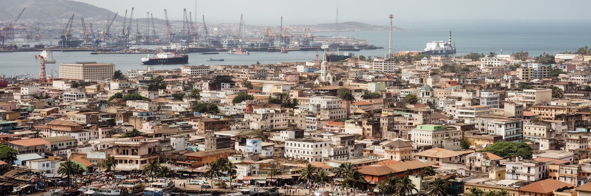
ルアンダは、単にアンゴラの首都や石油ビジネスの拠点として見るだけでは足りません。湾岸の高層ビル、港、要塞、政府機関、音楽、教会、ムセケ、郊外住宅、水売り、乗合タクシーが同じ都市を作っています。内戦後の人口集中は都市に活力を与えましたが、住宅、交通、水、教育、雇用の不足も大きくしました。石油収入は国家を支える一方、価格変動と通貨安を通じて家計を揺らします。植民地と奴隷交易の記憶は、港の景観に深い影を落とし、現代の国際関係は中国、ポルトガル、ブラジル、南部アフリカとの接続として現れます。ルアンダの魅力は、海岸の明るさと音楽の力にありますが、その背後には水を運ぶ時間、家賃、通勤、非公式労働、若者の将来への不安があります。世界都市としての重要性は、金融規模だけではなく、資源国家の富が都市生活へどう変換されるかを観察できる点にあります。港を通るコンテナ、教会の歌、ムセケの市場、湾岸のオフィスを別々に切り離さずに読むと、ルアンダは大西洋アフリカの現在を映す都市として立ち上がります。ここでは国家の力と生活の工夫が、毎日の移動と海風の中で交差しています。重要なのは、豊かな地区と不足する地区を対比するだけで終わらせないことです。その間を毎日移動する労働者、家族、商人、学生が都市をつないでいます。ルアンダは不均衡な都市でありながら、住民の工夫によって絶えず組み直される首都でもあります。